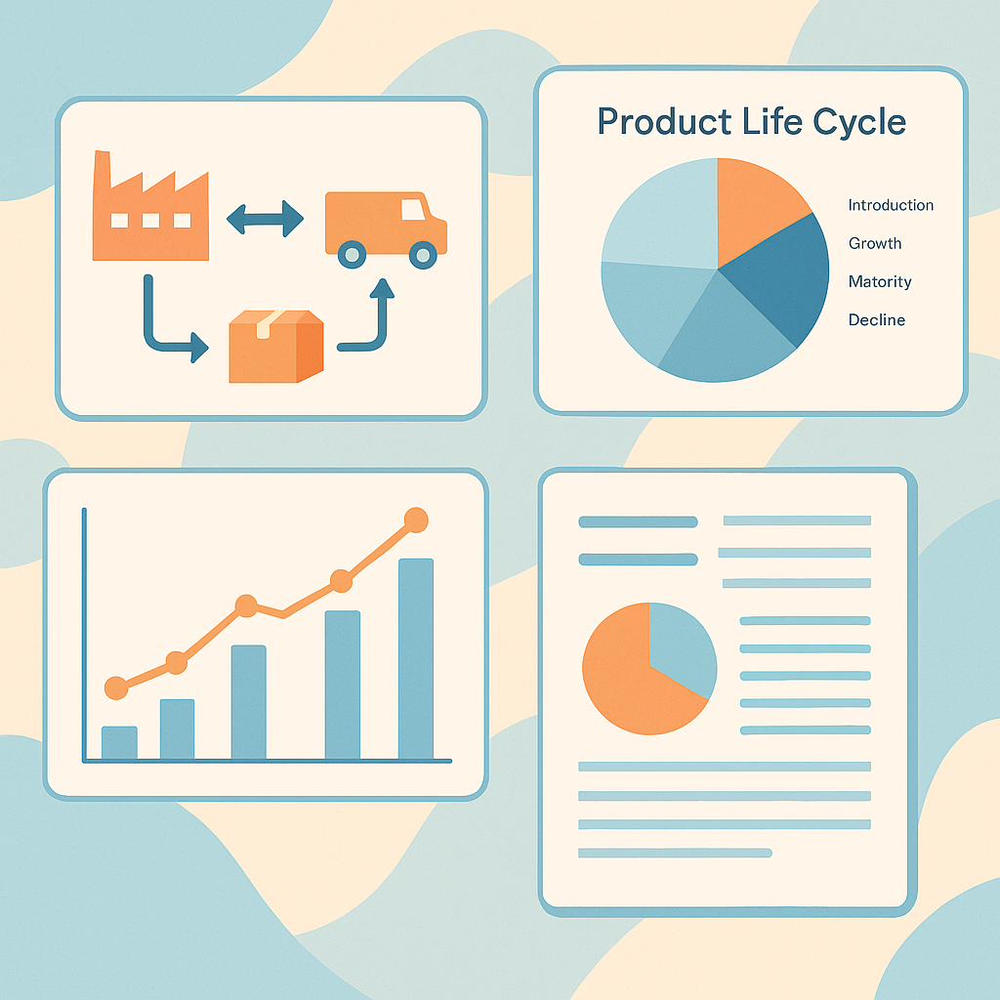

Tool Crib Indirect Materials Inventory Management System (IMIMS)

Led a two-semester capstone project for
Rochester Sensors, developing a
data-driven
Inventory and Vendor Management System (IMIMS)
to eliminate inefficiencies in procurement and warehouse
operations.
Applied a complete
systems engineering lifecycle to
design an integrated framework leveraging IoT-based tracking,
Microsoft D365, and L2L platforms for real-time visibility,
automated workflows, and enhanced data security.
Designed the system architecture,
project charter,
risk and quality plans, and
compliance matrices to support a
scalable and cost-effective implementation strategy.
Developed
Balanced Scorecard (BSC) and
Viable System Model (VSM)
frameworks to align strategic, operational, and learning
objectives within the organization.
Engineered
Management Control Systems (MCS)
and
Levers of Control (LOC) models to
enhance decision-making, accountability, and cross-functional
collaboration.
Proposed key performance metrics projecting up to a
50% reduction in procurement cycle time
and 20% cost optimization upon
implementation.